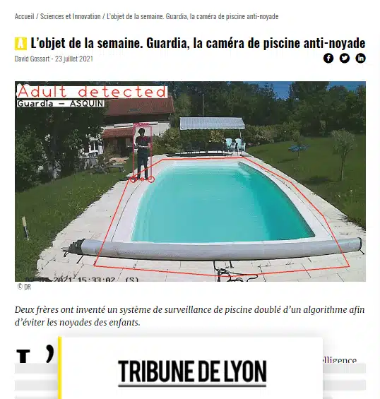

Alarme périmétrique
La caméra surveille une large zone autour de la piscine et détecte si votre enfant s'en approche sans être accompagné d'un adulte.
Alarme de piscine périmétrique · IA embarquée
Facile à installer, discrète et autonome, la caméra intelligente Guardia analyse la situation autour de votre piscine et évite les fausses alertes (vent, ballons, bouées…).
Le constat
Les accidents surviennent le plus souvent pendant les périodes « floues », lorsque les adultes s'éloignent du bassin (repas, jardinage…). Les enfants échappent à leur attention quelques minutes, malheureusement suffisantes pour qu'un drame survienne.
Source : enquêtes Noyades de Santé publique France.
Le principe · en trois temps
Zone surveilléeEnfant accompagné · aucune alerteEnfant seul près de l'eau · alarme
Fixée à un mur, un arbre ou un poteau, la caméra surveille une large zone autour de la piscine.
Un enfant accompagné d'un adulte : tout va bien, l'alarme reste silencieuse. Plus besoin de la désactiver avant la baignade.
L'adulte s'éloigne, l'enfant s'approche seul de l'eau : une puissante alarme retentit avant l'accident et vous laisse le temps d'intervenir.
Détection intelligente
Notre intelligence artificielle embarquée reconnaît enfants, adultes et animaux. L'alarme évite ainsi les fausses alertes dues au vent, aux ballons ou aux bouées.
L'alarme distingue un enfant d'un adulte, et sait si l'enfant est accompagné.
Les animaux sont reconnus comme tels : ils ne sont pas pris pour un enfant.
Le vent, un ballon ou une bouée qui dérive ne déclenchent pas l'alarme.
Fonctionnalités
Une caméra autonome, une IA embarquée, aucune donnée qui sort de chez vous.
La caméra surveille une large zone autour de la piscine et détecte si votre enfant s'en approche sans être accompagné d'un adulte.
Une puissante alarme prévient avant qu'un accident ne survienne et vous laisse un temps décisif pour intervenir.
Notre intelligence artificielle embarquée reconnaît enfants, adultes et animaux, et évite les fausses alertes (vent, ballons, bouées…).
Aucune donnée ne sort de chez vous. Le respect de votre vie privée est primordial.
Développée avec nos utilisateurs, l'alarme est intelligente et autonome. Plus besoin de la désactiver avant la baignade.
La caméra s'installe facilement (mur, arbre, poteau) et ne nécessite aucuns travaux autour de votre piscine.

Le produit
Une alarme sonore intégrée et un processeur d'intelligence artificielle : les images sont analysées par la caméra elle-même, au bord de votre piscine. Rien n'est envoyé sur internet.
Dans la boîte
Vidéos
Deux situations filmées, telles que la caméra les analyse.
Sécuriser sa piscine
Barrière, couverture, alarme d'immersion : chacune a ses moments d'absence. Guardia veille sur toute la zone, sans rien changer à vos habitudes.
Depuis 2004, les propriétaires de piscine enterrée doivent installer un dispositif de sécurité. Notre solution complète les protections comme les bâches et les couvertures, efficaces la nuit mais ouvertes pendant la journée.
Selon les enquêtes de Santé publique France, plusieurs centaines de noyades sont à déplorer chaque année, et dans 68 % des cas un système de sécurité était présent mais n'a pas rempli sa fonction.
Barrières, volets et couvertures restent souvent ouverts la journée. Les alarmes d'immersion ne détectent pas toujours la chute d'un enfant, ou sont désactivées à cause de leurs déclenchements intempestifs.
Notre alarme périmétrique réduit considérablement les risques de noyade. Conçue avec des familles, elle s'adapte à vos habitudes et protège dans la réalité du quotidien.
À propos
De nombreux accidents surviennent encore chaque année malgré les systèmes de sécurité en place : alarmes qui dysfonctionnent, couvertures et bâches laissées ouvertes… La mission de Guardia est de tout mettre en œuvre pour éviter les noyades dans les piscines.
Grâce à notre expertise en intelligence artificielle, nous avons conçu une alarme qui surveille en permanence les abords de la piscine et se fond dans les habitudes de ses utilisateurs.
Guardia est née à Lyon, où elle a été accompagnée par la French Tech Saint-Étienne — Lyon et Bpifrance, et labellisée Lyon Start Up.
Ils nous accompagnent



Ils parlent de nous · Tribune de Lyon« Guardia, la caméra de piscine anti-noyade » ↗Contact
L'alarme, l'installation, le projet ou une demande presse : écrivez-nous, nous répondons directement.